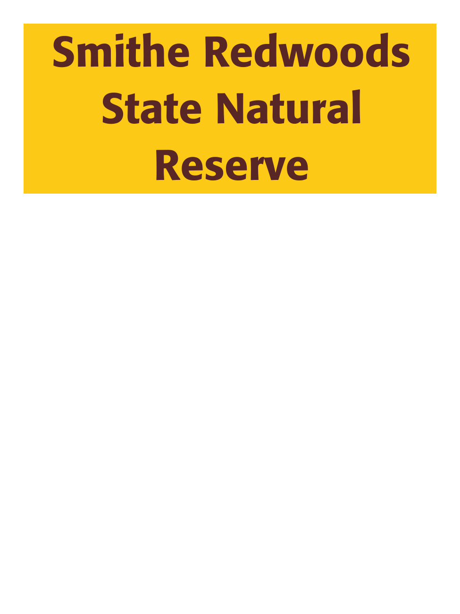

John Provazek's State Park Checklist
John's State Park Checklist
State Park Checklist
State Parks
Github
│
Map
│
All State Parks 170/283 ▾
All State Parks - 170/283
State Parks - 56/89
State Historic Parks - 38/52
State Beaches - 38/62
State Recreation Areas - 17/32
State Natural Reserves - 10/16
SVRA - 4/9
Other - 7/23
